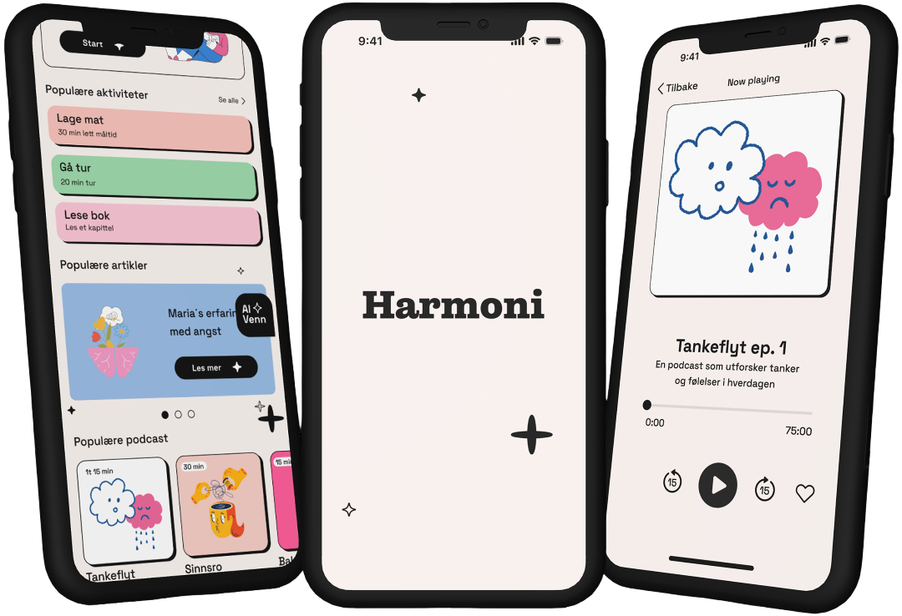
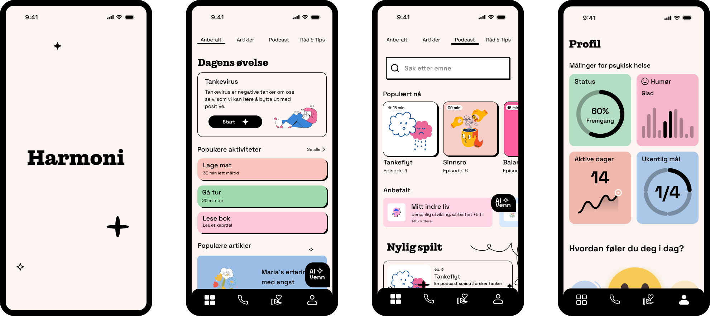

Harmoni
A digital app focused on self-care, emotional support, and accessible mental health resources.
View Full Figma Prototype
Role
UX/UI Designer
Tools
Figma, Miro, Illustrator
Overview
Harmoni is a mobile app designed to support young adults experiencing mild to moderate mental health challenges. The app provides accessible self-care tools, emotional support, and resources in a safe and user-friendly environment. The solution focused on reducing stigma around mental health through user-centered design and iterative prototyping.
The Problem
Many young adults struggle to seek help for mental health challenges due to stigma, lack of accessible support, or uncertainty about where to start. Existing solutions can often feel overwhelming, impersonal, or difficult to navigate. The goal of Harmoni was to create a safe and approachable platform that encourages self-care, emotional reflection, and support for both users and their friends.
Process
The project followed an iterative and user-centered design process focused on accessibility, emotional safety, and usability. Through research and analysis, we identified key challenges related to mental health support, including the need for low-threshold guidance and easier ways to support friends experiencing emotional difficulties.
Based on these insights, we developed conceptual models, information architecture, and wireframes in Figma to explore navigation, structure, and user flows. The design process emphasized simplicity, clarity, and emotional comfort through calm visuals and intuitive interactions.
We also conducted usability testing with participants of different ages and technical backgrounds to evaluate navigation, functionality, and overall user experience. Feedback from testing led to several improvements, including clearer onboarding, better navigation, increased whitespace, and more intuitive placement of key features.
Prototype Screenshots
Selected screens from the Harmoni prototype showcasing onboarding, emotional support tools, mood tracking, and mental health resources.

Result
The final prototype combined self-care tools, social support features, and access to mental health resources into one cohesive and supportive experience. Users found the solution intuitive, calming, and easy to navigate, while usability testing highlighted the importance of accessibility and emotional clarity in sensitive digital products.
Through this project, I gained valuable experience designing for mental health and accessibility, while strengthening my skills in user research, prototyping, usability testing, and iterative UX/UI design.